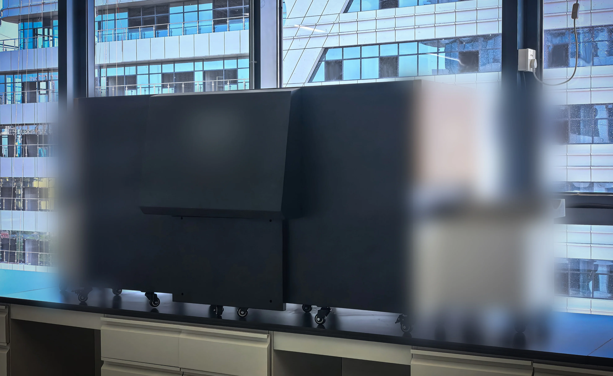
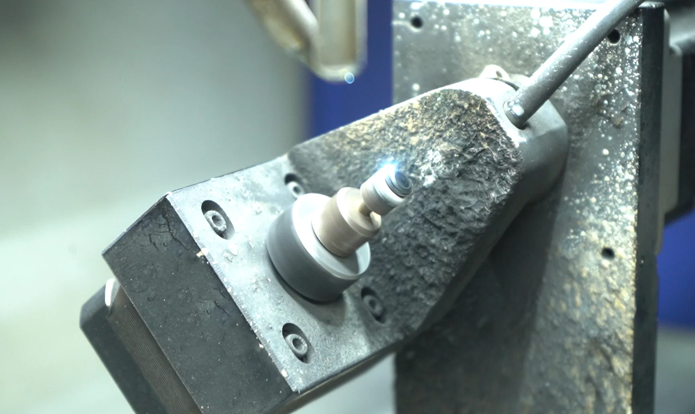

Memorial diamond production is not a single process — it is a pipeline of distinct, sequential operations, each with its own technical requirements, quality checkpoints, and failure modes. For B2B partners and their customers, understanding this timeline matters: it sets expectations, enables accurate delivery commitments, and helps distinguish legitimate manufacturers from operations that cut corners.
This article presents the complete production cycle as practiced at BioGem Lab, from the moment biological material arrives at our facility to the day a certified memorial diamond ships to a partner's customer. Total elapsed time: approximately 60 days.
TL;DR — Quick Summary
Memorial diamond production is a 60-day pipeline of five distinct stages — carbon receipt, extraction, graphitization, HPHT synthesis, and finishing — each with specific quality checkpoints. Understanding this timeline helps B2B partners set accurate delivery expectations and distinguish legitimate manufacturers from operations that cut corners. The complete cycle from biological material arrival to certified gem shipment requires approximately two months of controlled laboratory work.

Figure 1: Memorial diamond production flowchart showing the five major stages from biological carbon receipt to certified gem delivery.
Production Timeline at a Glance
Carbon Receipt & Logging
Day 0–2 · Chain-of-custody documentation, sample photography, ID assignment
Carbon Extraction & Purification
Day 3–14 · Ashing, acid digestion, washing, drying
Graphitization
Day 15–20 · High-temperature conversion to crystalline graphite
HPHT Diamond Synthesis
Day 21–40 · 5–6 GPa, 1,300–1,600°C, 10–20 days growth
Cutting, Polishing & Certification
Day 41–55 · Laser cutting, faceting, polishing, gemological grading
Partner Branded Packaging & Shipment
Day 56–60 · CCIC traceability labeling, certificate printing, packaging, logistics
Stage 1: Carbon Receipt & Chain-of-Custody (Days 0–2)
Every memorial diamond begins with documentation. When a partner submits a carbon source — typically 5–10 grams of hair, fur, nails, or botanical material — the first action is not chemical but administrative: photography, weighing, unique ID assignment, and entry into our traceability database. This step creates the audit trail that supports the CCIC traceability certificate the customer will eventually receive.
For partners, this means customers can verify that "their" carbon genuinely became "their" diamond. The chain-of-custody record is accessible via the QR code on every CCIC traceability label.
Stage 2: Carbon Extraction & Purification (Days 3–14)
This is the longest single stage in the production cycle and the most quality-critical. The biological material undergoes:
- Controlled ashing at 600–800°C to remove water, proteins, and volatile organics
- Acid digestion with HCl and HF to dissolve inorganic salts and metal oxides
- Multiple washes with deionized water until neutral pH
- Vacuum drying at 120°C to remove residual moisture
At the end of Stage 2, the sample has been reduced to purified carbon powder with residual inorganics below 0.5% by mass. The powder is then analyzed for nitrogen content, which predicts the final diamond color grade.
Stage 3: Graphitization (Days 15–20)
Purified carbon powder is loaded into a graphitization furnace and heated to 2,000–3,000°C under argon atmosphere. This converts the amorphous or partially crystalline carbon into graphite — the hexagonal crystal structure required as HPHT feedstock.
Incomplete graphitization is a common failure mode in inexperienced operations. Amorphous carbon does not participate in diamond growth; it simply occupies space in the growth cell. Our target is >95% crystalline graphite conversion, verified by X-ray diffraction before the material moves to synthesis.

Figure 2: Graphitization furnace operating at 2,000–3,000°C, converting purified bio-carbon into crystalline graphite feedstock.
Stage 4: HPHT Diamond Synthesis (Days 21–40)
The graphite is loaded into a growth cell with a metal catalyst solvent (typically Fe-Ni alloy) and a diamond seed crystal. The cell is compressed to 5–6 GPa and heated to 1,300–1,600°C in a belt press or cubic press.
Growth time varies with target size:
- · 0.5 ct: ~7–10 days
- · 0.50 ct: ~10–14 days
- · 1.00 ct: ~14–20 days
- · 1.50 ct: ~18–25 days
During growth, temperature and pressure are monitored continuously. Deviations outside the optimal growth window cause defects, inclusions, or growth stoppage. Modern press control systems maintain stability within ±5°C and ±0.1 GPa — tolerances that were difficult to achieve even a decade ago.
Stage 5: Cutting, Polishing & Certification (Days 41–55)
After synthesis, the raw diamond is a rough octahedral crystal. It must be:
- Laser-cut to remove the outer growth skin and shape the preform for faceting
- Faceted using precision grinding wheels to achieve the desired cut (brilliant, princess, cushion, etc.)
- Polished to optical-grade surface finish — the final step that gives a diamond its brilliance
- Graded for color, clarity, carat weight, and cut quality; documentation prepared
Our standard certification package includes:
- · Gemological grading report (4C documentation)
- · CCIC national traceability QR code label
- · Production photography (optional, partner-branded)
- · Partner-branded certificate sleeve (for white-label partners)

Figure 3: Laser cutting system shaping a rough memorial diamond crystal into a preform ready for faceting and polishing.
Stage 6: Partner Branded Packaging & Shipment (Days 56–60)
The final stage is where B2B white-label partnerships become visible to the end customer. For white-label partners, we produce:
- Partner-branded packaging — velvet-lined presentation case with partner logo and color scheme
- Partner-branded certificate sleeve — the gemological report inserted into a sleeve with partner branding
- CCIC traceability label — QR code linking to the chain-of-custody record
- Direct-to-customer shipping — we ship under partner branding, or to partner's facility for local handover
Why 60 Days Matters
Industry average for memorial diamond production is 4–8 months. Some competitors quote 7–10 months. Extended timelines create cash flow pressure for partners, customer anxiety, and competitive vulnerability.
Our 60-day cycle is achieved through:
- Parallel processing — multiple samples in extraction and graphitization simultaneously
- Optimized HPHT parameters — growth protocols tuned for speed without sacrificing quality
- Dedicated cutting/polishing capacity — in-house finishing eliminates external vendor delays
- Streamlined certification — automated documentation and CCIC label generation
The 60-day commitment is not a marketing claim. It is a production engineering outcome — the result of 13 years of process refinement, patented extraction technology, and purpose-built HPHT infrastructure.